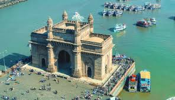

The Gateway of India is one of Mumbai’s most iconic landmarks and a must-visit attraction for tourists. Built in 1924, it served as a ceremonial entrance to India for Viceroys and new governors of Bombay during the British Raj. This grand monument overlooks the Arabian Sea and stands as a symbol of colonial history and India’s independence.
Designed in Indo-Saracenic style, it features intricate stone latticework and impressive arches. The structure is not only a historical monument but also a popular gathering spot for locals and tourists alike. It holds a special place in India's history, as the last British troops departed through this gateway after India gained independence in 1947.
⭐⭐⭐⭐⭐Weather: 28 - 34°C
Label:Must-Visit Landmark
Timing:Open 24 hours
Entry Fee: Free Entry
|  |

|